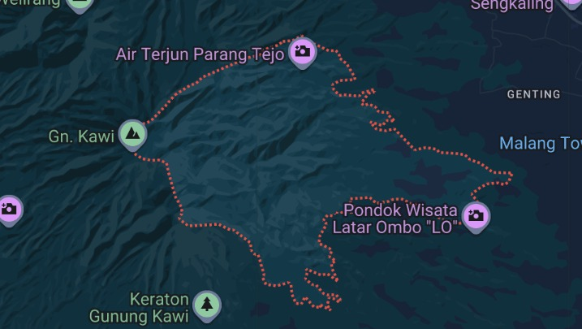

Kesenjangan Digital di Tingkat Pedesaan
- Kesenjangan Digital: Pesatnya penetrasi seluler belum diiringi ekosistem digital terpadu untuk desa wisata.
- Keterbatasan Pemasaran: Informasi pariwisata terpecah-cepah di berbagai platform media sosial tidak terstruktur.
- Administrasi Konvensional: Tata kelola data ekonomi (UMKM) dan pengawasan dana kemitraan di kantor desa masih manual.
Urgensi Masalah di Desa Kucur
Desa Kucur memiliki potensi hortikultura (kopi ekspor & jeruk) dan wisata alam melimpah, namun:
❌ UMKM tidak memiliki katalog online yang terpusat.
❌ Proses sponsorship dan monitoring data keuangan desa belum tercatat otomatis.
Fokus Tujuan & Manfaat PKL
Manfaat Bagi Stakeholder
Cetak biru sistem pariwisata terpadu & platform promosi katalog online terstruktur.
Kemudahan akses panduan peta interaktif, pemesanan guide WA, dan artikel edukasi desa.
Kontribusi nyata pengabdian masyarakat & penyediaan studi kasus rekayasa perangkat lunak.
Profil Instansi Desa Kucur
- Instansi Kemitraan: Kantor Pemerintah Desa Kucur bekerja sama dengan Karang Taruna dan Kelompok Sadar Wisata (Pokdarwis).
- Sektor Ekonomi Unggulan:
- Perkebunan kopi kelas ekspor dan jeruk organik.
- Situs wisata alam penangkaran, outbound, dan budaya.
- UMKM olahan pangan kreatif khas pedesaan.

Lokasi Instansi
Jl. Raya Kucur, Kec. Dau, Kabupaten Malang, Jawa Timur.
Landasan Teori dan Kerangka Kerja LENTERA
Pemisahan visual (Front-End) dan bisnis logika (Back-End) berbasis RESTful API dengan format transfer data JSON.
Sistem otentikasi stateless menggunakan JSON Web Token dan pembatasan hak akses dasbor berbasis peran pengguna.
Konstrain database ACID (Atomicity, Consistency, Isolation, Durability) untuk mengunci transaksi withdrawal saldo UMKM.
Pemetaan marker digital batas koordinat GPS wisata dengan pustaka peta interaktif Leaflet.js.
Penyusunan blueprint spesifikasi kebutuhan formal mengacu pada standar IEEE Std 830-1998.
Siklus hidup rekayasa perangkat lunak inkremental dengan perulangan masukan (feedback) pengguna yang cepat.
Siklus Rapid Application Development
4 Tahapan Pelaksanaan
- Requirements Planning: Observasi dan penentuan kebutuhan (SRS).
- User Design: Pemodelan UML, perancangan basis data, dan antarmuka.
- Construction: Pengkodean template web frontend LENTERA.
- Cutover: Pengujian Black-box dan pemaparan hasil uji (evaluasi) kepada mitra.
Otorisasi Peran Sistem LENTERA

Aktor & Otoritas Sistem
- Pengunjung (Wisatawan): Tanpa login. Melihat peta, rute, katalog, detail produk, testimoni, dan checkout WhatsApp.
- Sponsor (Investor B2B): Mengajukan proposal kemitraan sponsorship.
- Penjual (Mitra UMKM): Autentikasi JWT. Mengelola produk toko (CRUD), pesanan masuk, dan mengajukan penarikan saldo.
- Admin (Karang Taruna): Autentikasi JWT. Mengelola penanda peta (CRUD), artikel/buletin (CRUD), dan moderasi testimoni.
- Desa (Kepala Desa): Autentikasi JWT. Mengelola akun admin (CRUD), verifikasi proposal, serta approval withdrawal & upload struk keuangan.
Spesifikasi Kebutuhan Perangkat Lunak
Mengidentifikasi 7 Kebutuhan Fungsional Utama:
Spesifikasi Data & Non-Fungsional
- Entity Relationship Diagram (ERD): Model data relasional yang
mendokumentasikan tabel
Users,Products,Locations,Sponsorships,Withdrawals,E_Resources, danAudit_Logs. - Struktur Tabel Fisik: Tipe spasial koordinat
POINTpada database pariwisata. - Batasan Sistem (Non-Fungsional): Kinerja render halaman < 1.5 detik dan proteksi sandi terenkripsi Bcrypt.
Evaluasi dan Hasil Uji Black-Box
Masukan Mitra (Desa Kucur) & Revisi
💡 Solusi Penyesuaian (Revisi Dosen & Mitra):
Mengganti peta rute dinamis dengan **pilihan destinasi terstruktur** serta tombol cepat
**"Hubungi Admin untuk Pemandu Wisata (Local Guide)"** via WhatsApp. Hal ini mempermudah
pelancong sekaligus memberdayakan karang taruna setempat.
Hasil Pengujian (Black-Box)
| ID | Kasus Uji | Hasil | Status |
|---|---|---|---|
| TC-CAT | Agregasi Cart | Total nominal sesuai | OK |
| TC-AUTH | RBAC 403 Block | Akses ditolak | OK |
| TC-FIN | Withdrawal limit | Blokir saldo < 50k | OK |
Kesimpulan Hasil PKL
- Laporan dan draf spesifikasi (SRS) LENTERA berhasil disusun dengan lengkap sesuai standar internasional IEEE Std 830-1998.
- Prototipe web responsif terbukti sukses merepresentasikan proses bisnis digital pariwisata terpadu, katalog UMKM, dan pengawasan admin.
Saran Pengembangan Selanjutnya
- Payment Gateway: Mengintegrasikan sistem pembayaran instan otomatis (Midtrans/Xendit) untuk memangkas pencatatan manual.
- Integrasi NIK: Sinkronisasi database kependudukan desa dengan database pengguna untuk validitas akun mitra warga.
- Mobile App: Pengembangan aplikasi mobile native untuk kemudahan akses GPS di lokasi wisata.